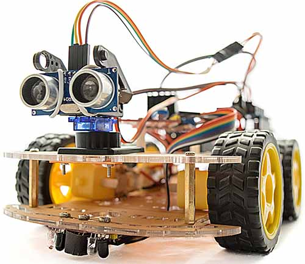

planteamiento del proyecto
Introducción
lo hemos elaborado con el proposito de eleborar un robot seguidor de lineas con la finalidad de proporcionar ayuda a personas con discapacidad visual para que estas puedan trabajar y valerse por su propia cuenta para desenvolverse en su lavor más especificamente orientado a una fabrica de arrmado de productos , la funcionalidad de nuestro robot es facilitar el trasporte de materiales en una linea de ensamble de modo que su modo de operar es que una persona deposite su parte del arrmado en el robot y este llegue hasta la segunda persona si necesidad de que alguien más interfiera y consecutivamente hasta su face final
